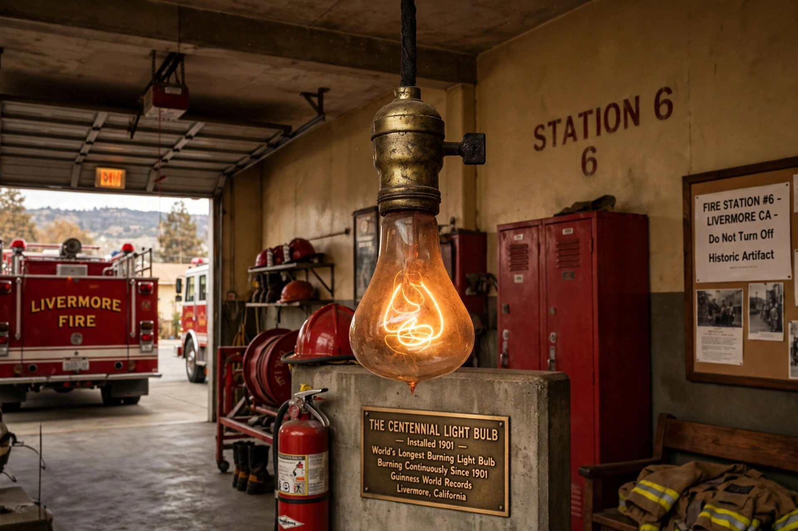

The Centennial Light, also known as the Livermore Light, is the world's longest-lasting lightbulb. It has burned almost continuously since 1901 at Livermore-Pleasanton Fire Department Station 6 in Livermore, California, and is often cited as evidence for the longevity of early incandescent lamps and a symbol in discussions of planned obsolescence.

| Location | Livermore, California, US |
|---|---|
| Type | Carbon-filament incandescent bulb |
| Manufacturer | Shelby Electric Company |
| First lit | 1901 |
| Power | About 4 watts (originally ~60 W) |
The hand-blown bulb with a carbon filament was made by the Shelby Electric Company in Shelby, Ohio, in the late 1890s and donated to the fire department in 1901. It originally hung at a fire station on L Street, was moved several times, and in 1976 was moved with a police and fire escort to its present station, where it is maintained on an uninterruptible power supply and rarely switched off, because thermal cycling is thought to shorten filament life.
The bulb was listed in Guinness World Records, celebrated its centennial in 2001 with a community party, and is watched by a dedicated webcam. Its endurance is attributed to low power, thick filament, and almost continuous operation.
This article is a recreation from memory.